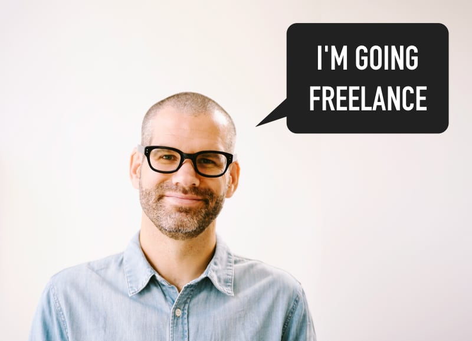
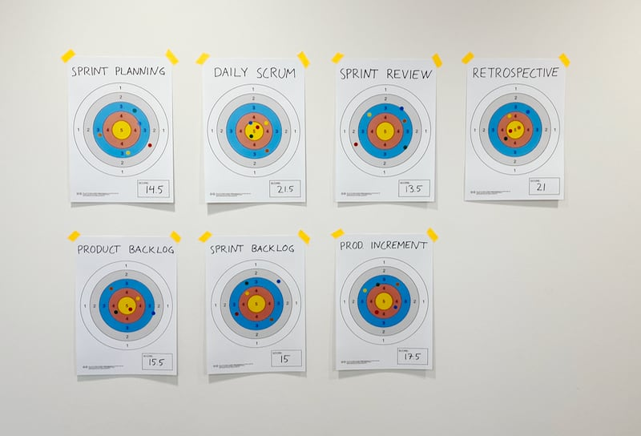

November will bring a big change for me.
When I finish my current position, I will be taking my agile coaching and facilitation freelance.
I’m a bit nervous but also absolutely thrilled about this opportunity to use my 12 years of agile experience to help as many teams as I can.
Read more
... and get your printable “shooting target” here

Regardless of whether you use a print-out (for example using my template below :) or draw one on a whiteboard, a shooting target can be a simple but versatile tool for scoring pretty much anything in your retrospectives.
Read more
The more, the merrier, right? Well, not in Scrum.
Every time I’ve been working with a team bigger than the 3-9 people guideline, I’ve experienced how incredibly hard it can be to make Scrum work well in these conditions. And problems can start showing even with teams towards the higher end of what’s “allowed”!
In this post, I will share the top 5 reasons I’ve seen why smaller is better.
Read more
See more articles on my blog